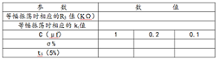
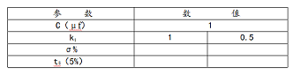

本实验的目的在于检验系统的稳定性与系统本身结构参数的关系，观察系统的不稳定现象，研究系统开环增 益和时间常数对稳定性的影响。
图中，G(s)=10*K1/(S*(0.1S+1)(T*S+1))，K1=R3/R2
TAP-2 型控制理论模拟实验装置
数字万用表
1．时间常数对稳定性的影响。按照电路图接好线路，令C=1μf，输入端加入阶跃信号，改变电位器R3，找到系统产生等幅 振荡时相应的R3 值（200KΩ左右）及K1 值，在R3不变的情况下，使电 容分别为0.2μf、0.1μf，观察系统稳定性、波形的变化，并记录相关数据。
2. 系统开环增益对稳定性的影响。令C=1μf，调整R3，使K1分别为1、0.5，观察系统波形的变化，并记录相关数据。
1．画出系统的模拟电路图。
2．在同一张方格纸上描绘不同k1值的响应曲线。
3．计算系统的临界放大系数，并与实验中测得的临界放大系数相比较。
4. 讨论时间常数、开环增益和系统稳定性及性能指标的关系。